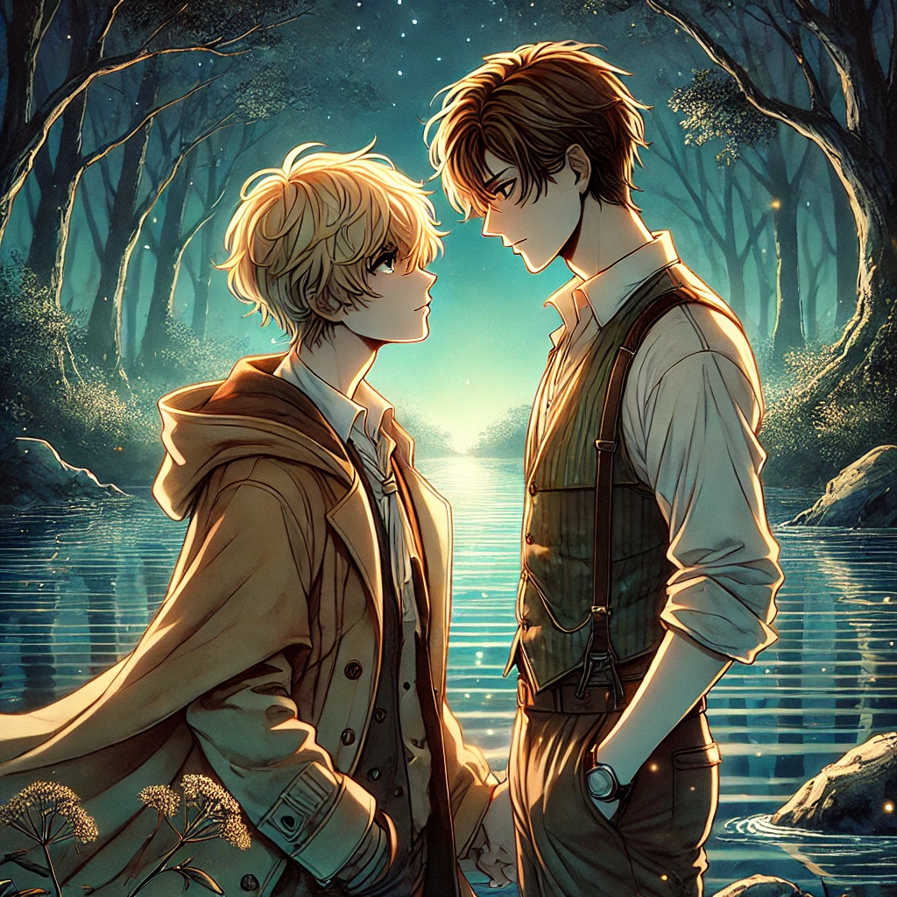

En un mundo lejano, donde la luz se derramaba como hilos dorados sobre la tierra, Max y Sam lograron escapar de la Zona de Oro. A simple vista, aquel lugar parecía un paraíso: la gente se dejaba envolver por la radiante calidez de la luz, entregándose a una embriagadora sensación de placer. Sin embargo, esa misma luz era un hechizo ancestral, creado por seres que se alimentaban de las vidas de aquellos que sucumbían a su resplandor. Atrapados en una ilusión de "felicidad", los habitantes de la Zona de Oro ansiaban perderse entre las estelas plateadas, creyendo que así alcanzarían la plenitud. Pero no todos se rendían a ese destino. Algunos, atormentados por momentos de consciencia, gritaban de angustia. Otros, como Sam y Max, decidieron huir.
Sam, se había dedicado al estudio de la magia de curación y protección, logró salir y encontró refugio en la Zona Segura. Un lugar donde los pensamientos se liberaban, convirtiéndose en fantasmas visibles, imposibles de ignorar. Allí, uno debía enfrentarse a su propio reflejo, a la verdad sin ilusiones. Para muchos, la sobriedad de aquel sitio era insoportable, pero Sam, con sus habilidades, desarrolló un escudo que le permitía moverse entre ambos mundos. Aun así, tuvo que dejar atrás a su familia. Solo le quedaban las aves que había domesticado y, a través de ellas, intentaba comunicarse con quienes aún permanecían atrapados. Sin embargo, la nostalgia lo consumía.
Fue en el bosque, junto a un lago, donde encontró a Teii. Parecía una mujer hermosa al borde de la muerte. Sam se acercó y, al tocarla, ella le ofreció una ilusión embriagadora a cambio de un encantamiento que la salvaría. En un acto de compasión, Sam aceptó. Desde entonces, Teii se convirtió en una presencia misteriosa en su vida, un eco de la magia que había dejado atrás.
Max, en cambio, escapó de la Zona de Oro tras la caída de su pueblo. Una bestia gigantesca había devastado su hogar, liberándolo del hechizo, pero a costa de todo lo que amaba. Huyó con desesperación, perseguido por criaturas que intentaban retenerlo. Gracias a todo ello se había convertido en un hábil cazador, capaz de moverse con facilidad en distintos ecosistemas.
Fue esclavo por un tiempo y, aunque logró escapar, lo hizo con una maldición: cada cuatro días, al caer el sol, se desvanecía sin saber si su cuerpo funcionaria de nuevo, sin saber si volvería. Cuando recuperaba la existencia, no lo hacía solo; lo acompañaban espíritus de todo tipo: sabios, temerosos y perversos.
La Zona Segura, con su belleza tangible y su tiempo inmutable, le ofreció refugio. Durante nueve días, los árboles soltaban hojas traslúcidas que brillaban con la luz de la luna, creando un espectáculo único. Sam y Max contemplaban la misma escena desde distintos puntos, hasta que, un día, junto al río, sus caminos inevitablemente se cruzaron. Sam lo vio hablar solo, intrigado por su actitud, lo observó en la distancia. Con el tiempo, comenzaron a saludarse, a encontrarse cada vez con mayor frecuencia, parecía haberse convertido en una rutina.
Una tarde, Sam vio a Max moverse con seguridad entre las ramas hasta que cayó al río. Sin dudarlo, corrió tras él y, en una persecución desesperada contra la corriente, logró alcanzarlo. Max, empapado y jadeante, le agradeció entre risas nerviosas. Conversaron largo rato y, por primera vez en mucho tiempo, Max se sintió acompañado. Sin embargo, olvidó lo inevitable: esa noche debía desaparecer. Frente a los ojos de Sam, su cuerpo perdió toda movilidad.
Desesperado, Sam llevó su cuerpo frío a casa y buscó en su conocimiento una solución. Teii intentó consolarlo con ilusiones, pero estas no surtían efecto. Decidido, lo llevó a su rincón más oculto, donde se encontraba una fuente secreta. Sentó a Max junto a ella, tomó unas gotas de su agua y, por un instante, quedó atrapado en la contemplación de su rostro. Se sacudió el trance y dejó caer el líquido en su boca. Lentamente, Max comenzó a regresar, mareado y confundido. Sam lo ayudó a incorporarse y lo sacó de allí con premura, cerrando la puerta con un gesto de su mano. No explicó lo que había hecho, prefirió guardar su secreto. Pero Teii lo había visto todo.
Con el tiempo, Max le confió su maldición. Evitaban verse el día de su desaparición y, en los otros días, Max le mostraba los lugares que más le fascinaban. Vagaba sin miedo, disfrutando cada noche como si fuera la última. Sam, en un acto de protección, creó un amuleto mágico para él. En secreto, lo sumergió en el agua de la fuente. Cada noche, el amuleto emitía un brillo hermoso y, cuando Max estaba por desvanecerse, lo sujetaba con fuerza. Con el tiempo, se aferró tanto a él que, antes de que él cayera, una lágrima siempre rodaba primero.
Sam no había vuelto a llevar a Max a su hogar; lo mantenía oculto bajo un hechizo que envolvía su perfecta estructura rectangular. Teii siempre lo esperaba en casa, era hermosa, etérea, y aunque a veces dormían juntos, ella creaba ilusiones para que él conciliara el sueño. Lo recibía con cartas de su familia, mantenía la casa impecable, y cada noche, sin excepción, acudía a la fuente para beber su agua.
Teii y las demás como ella existían como fruto de la insatisfacción con la vida que tenian un grupo de viejos y poderosos magos. No eran humanas, pero estaban hechas de todo lo que tenían las personas que viven insatisfechas: deseos insaciables, ilusiones rotas, sed, desesperación.
Eran seres nacidos de magia oscura, sangre y ambiciones desmedidas. Para vivir, necesitaban consumir la vida de otros. Con la llegada de la Zona Dorada, muchas así como Teii quedaron moribundas, vagando en busca de nuevas fuentes de energía. Pero existía un grupo de cazadores con la firmeza de querer preservar un territorio libre de aquella magia. Buscaban erradicar a esos seres para evitar que continuaran alimentándose de la esencia de los vivos. Y entre esos cazadores, estaba Max.
Sam y Teii tenían un pacto. Cuando él la encontró en el río, ella estaba débil, casi desvaneciéndose, rogaba por ayuda. Sus ilusiones aún eran hermosas, y Sam quedó atrapado en ellas, fascinado por la belleza de los espejismos que proyectaba. En su deseo por prolongar ese encanto, hizo algo que marcaría su destino. Tomó agua del río, infundió su propia energía en ella, y se la dio a beber. Posteriormente hicieron un pacto del cual Sam creó la fuente. Sam no pensó en las consecuencias, solo en mantener a Teii a su lado y en seguir disfrutando de su magia. A cambio, ella se mantendría viva bebiendo de la fuente cada madrugada, y él tendría acceso a un refugio de ilusiones, placer y escapismo.
En aquel rincón de la casa, Sam acudia a la fuente y apreciaba la vigorosa caída del agua, una danza hipnótica de su propia vida, era una extraña sensación, pero normalmente la disfrutaba, aunque ahora a Sam le causaba cierta incertidumbre desde que Max llegó a su vida, Sam observaba el presente de otra manera más cuando estaba con él, no escuchaba el sonido del agua, ni sabía si podría estaba a punto de detenerse.
Max y Sam tenían encuentros con más frecuencia, y un día, decidieron ir a un hermoso lugar, jugaron con magia inocente, participaron en eventos de la comunidad, bailaron y rieron al ritmo de la música, después de ello Max lo invitó a su casa. Era pequeña, cálida, acogedora. Le ofreció algo de beber y juntos jugaron un viejo juego de cartas. El juego consistía en adivinación. Sacaban cartas al azar y acumulaban puntos para salvarse de otras cartas desfavorables. Ganaban juntos o morían juntos. Eran demasiadas cartas, algunas de ellas emitían sonidos con la magia. De pronto, un estruendo interrumpió la partida. Salieron con cautela.
Una sombra oscura los observaba. De repente, hilos oscuros envolvieron a Sam, sujetándolo con fuerza. Sin pensarlo, Max atacó. Desenvainó su daga, pero la silueta se desvanecía y aparecía en distintos puntos. Entonces, Max dejó de resistirse al instinto y siguió las voces de los espíritus que lo acompañaban. Conjuró sus propios hilos oscuros, atrapó a la entidad, le arrebató su poder y, finalmente, pudo verlo con claridad. Era un viejo amigo suyo.
El impacto de la revelación lo paralizó por un instante. Max lo dejó escapar. Luego, se giró hacia Sam, quien lo observaba en un silencio cargado de emociones. No dijeron nada. Max le ofreció quedarse en su casa y Sam, aún temblando, aceptó. El silencio dentro de la casa era denso, cargado de dudas.
Max rompió el mutismo y le confesó la verdad: aquel ser que habían enfrentado era su antiguo compañero. Ambos habían sido esclavos de una mujer poderosa, se convirtieron cazadores de seres ciertos seres mágicos y en la daga podian almacenar ese poder para entregarlo. Pero Max había desertado y escapado.
Y ahora no entendía por qué su amigo había llegado hasta ahí, no tenía sentido. Algo dentro de él lo hacía sentirse culpable, aunque no supiera exactamente de qué. Sam se acercó, tratando de disipar su angustia. Aunque aún sentía miedo, algo dentro de él lo impulsó a consolarlo. Entonces, la mano de Max se posó sobre la suya. Sam se volvió hacia él y, en un acto instintivo, apretó con más fuerza su mano. Max lo miró con intensidad y, sin dudar, lo besó. Mientras tanto, Teii observaba desde las sombras.
